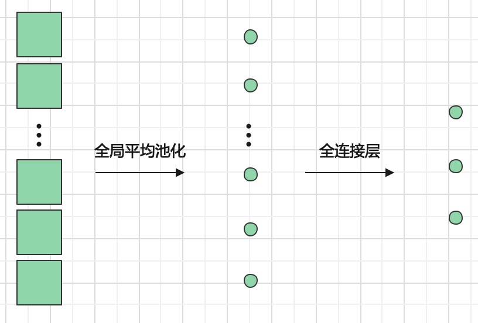

关于作者
关于作者
全连接层
下图展示了5个全连接层互相连接，并得到最终输出的结构：

这里可能有一个问题，这个图像不就是之前多层感知机的拓展吗？虽然很像，但我们这里需要区分一下两者。
区分
多层感知器（Multilayer Perceptron, MLP） 是一种前馈神经网络，由多个全连接层和非线性激活函数组成。MLP通常用于解决分类和回归问题，可以学习到数据的非线性特征。
全连接层（Fully Connected, FC）是一种神经网络层结构，它将输入层的所有神经元与输出层的所有神经元相连。FC层可以将输入数据映射到一个高维空间中，并将不同的特征进行组合和提取。
但这么复杂的网络肯定不会再让我们自己定义权重和偏置了，而是可以直接调用torch的函数
torch.nn.Linear(in_features, out_features, bias=True)
- in_features: 每个输入特征的尺寸
- out_features: 每个输出特征的尺寸
- bias:如果设置为 False，该层将不会学习加性偏差。默认值：True
注意这里说是 每个特征， 因为在输入时可能有多个样本一起输入。如此输入输出的shape定义如下
- 输入: : ＊表示任意数量的维度，包括None, in_feature 。
- 输入: : ＊表示任意数量的维度，包括None, out_features 。
代码实现如下
m = nn.Linear(20, 30)
input = torch.randn(128, 20)
output = m(input)
print(output.size())
# torch.Size([128, 30])
需要解释的是128是指代样本个数，所以输出时候这个维度不会变化，但是第二微因为矩阵成会转换为输出通道数。
Important
全连接层的参数数量非常庞大，通常会占用神经网络总参数的大部分。所以一般使用时候会采用较少的全连接层,另外输出维度也不会特别大。
实现原理
为什么到这里才介绍实现原理呢？因为我觉得这其实算稍微拓展一点的内容，所以看不懂也没有关系，就放后面了。
全连接层实际上是利用如下公式对输入进行
其中A就是可学习权重矩阵，尺寸为[out_features, in_features]。值初始化为均匀分布 。其中in_feature
b是可学习偏置，形状为[out_features]。值初始化为均匀分布 。其中in_feature
与卷积连接
在设计分类网络中，我们一般采用卷积，池化层等提取网络特征，然后再使用全连接层得到输出。
但前面说过卷积一般用于处理2维特征图，而全连接是处理一维的，那这中间采用什么连接呢？一般来说可以用
如下图所示

当然也可以将最后一维特征图展开变成一维，如原来最后一层特征图尺寸为[n, 2, 2]，可以将其展开为[n22, 1]的特征向量，但其缺点是会引入较大维度。